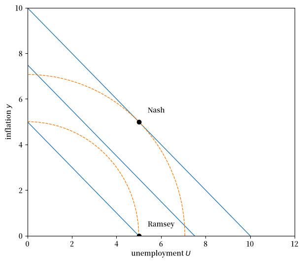
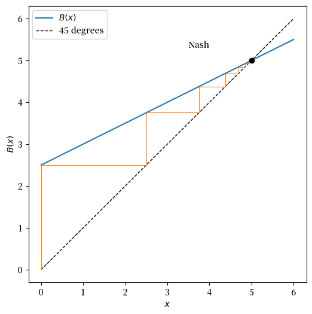
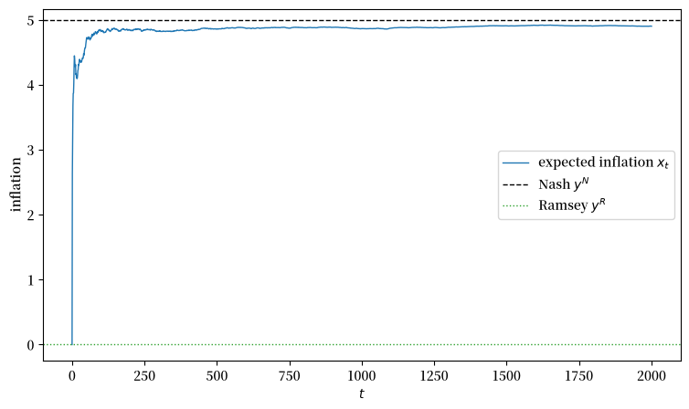
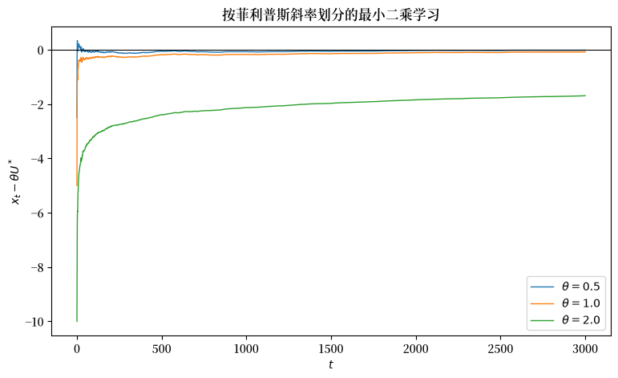

95. 信誉问题#
95.1. 概述#
本讲座描述了一个由 [Kydland and Prescott, 1977] 以及罗伯特·巴罗和大卫·戈登所研究的那种基本预期菲利普斯曲线模型。
这是基于 [Sargent, 1999] 各章内容的系列讲座中第一讲建模讲座，紧接 美国通货膨胀的兴衰 之后，后者阐述了两种叙事并回顾了卢卡斯批判。
那些章节形式化了：
发现菲利普斯曲线所激发的通胀诱惑；
承诺技术在抵御这种诱惑方面的价值；以及
声誉机制作为承诺替代品的脆弱性。
在整个讲座中，我们只使用理性预期这一均衡概念。
政府和私人部门决策时序上的改变会诱发不同的经济体，产生不同的结果。
每当政府希望比其必须做出决策的时间更早地做出决策时，它就面临信誉问题。
我们将比较两种时序协议下的结果：
在其中一种协议下，政府在私人部门形成其预期之前选择通货膨胀率，因此政府会考虑其选择将如何影响这些预期。
在另一种协议下，政府在私人部门已经形成其预期之后选择通货膨胀率。
第二种协议下结果的恶化程度衡量了无法承诺所造成的损失。
我们还研究了两种收敛于无承诺（纳什）结果的非均衡动态：
最优反应动态，以及
最小二乘学习。
让我们从一些标准的导入开始：
import matplotlib.pyplot as plt
import matplotlib as mpl
FONTPATH = "fonts/SourceHanSerifSC-SemiBold.otf"
mpl.font_manager.fontManager.addfont(FONTPATH)
plt.rcParams['font.family'] = ['Source Han Serif SC', 'DejaVu Sans']
import numpy as np
95.2. 单期经济#
尽管信誉问题本质上是动态的，但在不同的期内时序模式下，可以在一个单期模型中描述它们。
这为后续讲座中的多期分析做好了准备。
我们用南希·斯托基（Nancy Stokey）在 [Stokey, 1989] 中所使用的术语来描述 [Kydland and Prescott, 1977] 的单期模型的一个版本。
设 \((U, y, x)\) 分别为失业率、通货膨胀率，以及公众对通货膨胀率的预期。
政府的单期收益为：
失业率由一条预期增广的菲利普斯曲线决定：
该方程表明，只有当出现意外的通胀或通缩时，失业率才会偏离自然率 \(U^*\)。
将 (95.2) 代入 (95.1)，可将政府的收益表示为函数 \(r(x, y)\)：
我们使用以下概念。
理性预期均衡： 满足 (95.2) 且 \(y = x\) 的三元组 \((U, x, y)\)。
政府（单期）最优反应： 给定公众的预期 \(x\)，设定 \(y\) 的决策规则 \(B(x) = \operatorname{argmax}_y r(x, y)\)。
纳什均衡： 满足 (i) \(x = y\)，以及 (ii) \(y = B(x)\) 的二元组 \((x, y)\)。
拉姆齐问题： \(\max_y r(y, y)\)。
拉姆齐结果是达到最大值的 \(y\)。
最优反应动态： 动态系统 \(y_t = B(y_{t-1})\)，给定 \(y_0\)。
理性预期均衡是位于菲利普斯曲线上、且给定 \(x\) 时私人主体不会被欺骗的三元组 \((U, x, y)\)。
将 \(x = y\) 代入菲利普斯曲线 (95.2) 表明，在任何理性预期均衡中 \(U = U^*\)。
这确定了 \(U^*\) 为自然失业率。
95.3. 纳什和拉姆齐结果#
纳什均衡建立在给定预期状态 \(x\) 时政府的最优反应之上，同时结合市场的反应 \(x = y\)，即对给定 \(y\) 的理性预期。
在固定 \(x\) 的情况下，对 (95.3) 关于 \(y\) 求最大化，得到政府的最优反应函数：
纳什均衡设定 \(x = y = B(x)\)，由此得到：
拉姆齐问题则在最大化之前就施加 \(x = y\)，因此它最大化 \(r(y, y) = -\tfrac{1}{2}(U^{*2} + y^2)\)，得到拉姆齐结果：
因此 \(r(x^R, y^R) = -\tfrac{1}{2} U^{*2}\)，而 \(r(x^N, y^N) = -\tfrac{1}{2}(1 + \theta^2) U^{*2}\)。
两种结果都实现了自然率 \(U^*\)，但纳什均衡以正的通货膨胀率实现它，因此收益严格更低。
让我们把这些公式整理到一个类中。
class CredibilityModel:
"""
A one-period expectational Phillips curve economy.
"""
def __init__(self, θ=1.0, U_star=5.0):
self.θ, self.U_star = θ, U_star
def phillips(self, y, x):
"Unemployment implied by inflation y and expected inflation x."
return self.U_star - self.θ * (y - x)
def r(self, x, y):
"Government one-period payoff."
U = self.phillips(y, x)
return -0.5 * (U**2 + y**2)
def B(self, x):
"Government best response to expected inflation x."
θ = self.θ
return θ / (θ**2 + 1) * self.U_star + θ**2 / (θ**2 + 1) * x
def nash(self):
"Nash equilibrium inflation (= expected inflation)."
return self.θ * self.U_star
def ramsey(self):
"Ramsey inflation (= expected inflation)."
return 0.0
cm = CredibilityModel()
y_N, y_R = cm.nash(), cm.ramsey()
print(f"Nash inflation y^N = {y_N:.2f}")
print(f"Ramsey inflation y^R = {y_R:.2f}")
print(f"Nash payoff r = {cm.r(y_N, y_N):.3f}")
print(f"Ramsey payoff r = {cm.r(y_R, y_R):.3f}")
Nash inflation y^N = 5.00
Ramsey inflation y^R = 0.00
Nash payoff r = -25.000
Ramsey payoff r = -12.500
纳什结果的收益比拉姆齐结果的收益差。
政府会更愿意实现拉姆齐结果，但如果没有一种能在公众形成预期之前承诺 \(y = 0\) 的技术，它就无法实现这一结果。
纳什均衡由这样一种时序协议支持：政府在私人部门形成预期之后才做出决策。
拉姆齐结果则与这样一种时序协议相关联：政府首先做出选择，并且知道在理性预期均衡中，公众的预期会随其选择而变化，因为 \(y = x\)。
95.3.1. 两种结果的图示#
政府的无差异曲线是 \((U, y)\) 空间中以原点为中心的圆，因为收益 (95.1) 仅依赖于 \(U^2 + y^2\)。
对于给定的预期 \(x\)，菲利普斯曲线 (95.2) 是 \((U, y)\) 空间中一条向下倾斜的直线。
给定 \(x\) 时，政府对 \(y\) 的最优反应出现在无差异曲线与由 \(x\) 索引的菲利普斯曲线相切的位置。
fig, ax = plt.subplots(figsize=(7, 6))
U_grid = np.linspace(0, 12, 200)
# a family of Phillips curves indexed by expected inflation x
for x in [0.0, y_N / 2, y_N]:
# U = U_star - θ (y - x) => y = x + (U_star - U) / θ
y_line = x + (cm.U_star - U_grid) / cm.θ
ax.plot(U_grid, y_line, 'C0', lw=1)
# government indifference curves (circles U^2 + y^2 = const)
ξ = np.linspace(0, 2 * np.pi, 200)
for R in [np.hypot(cm.U_star, y_R), np.hypot(cm.U_star, y_N)]:
if R > 0:
ax.plot(R * np.cos(ξ), R * np.sin(ξ), 'C1--', lw=1)
ax.plot(cm.U_star, y_N, 'ko')
ax.annotate('Nash', (cm.U_star, y_N), (cm.U_star + 0.4, y_N + 0.4))
ax.plot(cm.U_star, y_R, 'ko')
ax.annotate('Ramsey', (cm.U_star, y_R), (cm.U_star + 0.4, y_R + 0.4))
ax.set_xlim(0, 12)
ax.set_ylim(0, 10)
ax.set_xlabel('unemployment $U$')
ax.set_ylabel('inflation $y$')
plt.show()
findfont: Failed to find font weight normal, now using 600.
findfont: Failed to find font weight normal, now using 600.
findfont: Failed to find font weight normal, now using 600.

图 95.1 以预期通货膨胀率为索引的菲利普斯曲线、政府无差异曲线以及纳什和拉姆齐结果#
实线是预期通货膨胀率 \(x \in \{0, y^N/2, y^N\}\) 对应的菲利普斯曲线；虚线圆是政府的无差异曲线。
纳什结果 \((U^*, y^N)\) 位于比拉姆齐结果 \((U^*, 0)\) 更大的圆上（收益更低）。
95.4. 最优反应动态#
最优反应动态通过假设一种自适应机制，将单期模型转化为动态模型，在该机制中，预期通货膨胀率等于上一期的通货膨胀率，即 \(x_t = y_{t-1}\)。
这导致了以下动态：
由于 \(B\) 是一个斜率为 \(\theta^2 / (\theta^2 + 1) \in (0, 1)\) 的仿射映射，对其迭代会从任意起始点收敛到不动点 \(y^N = \theta U^*\)。
让我们将最优反应函数与 45 度线一起绘图，并模拟该动态过程。
def best_response_path(cm, y0, T=20):
"Iterate y_{t+1} = B(y_t)."
y = np.empty(T + 1)
y[0] = y0
for t in range(T):
y[t + 1] = cm.B(y[t])
return y
y_path = best_response_path(cm, y0=0.0, T=20)
fig, ax = plt.subplots(figsize=(6, 6))
x_grid = np.linspace(0, y_N + 1, 100)
ax.plot(x_grid, cm.B(x_grid), 'C0', label='$B(x)$')
ax.plot(x_grid, x_grid, 'k--', lw=1, label='45 degrees')
# cobweb of the best response dynamics
for t in range(len(y_path) - 1):
ax.plot([y_path[t], y_path[t]], [y_path[t], y_path[t + 1]], 'C1', lw=0.8)
ax.plot([y_path[t], y_path[t + 1]], [y_path[t + 1], y_path[t + 1]],
'C1', lw=0.8)
ax.plot(y_N, y_N, 'ko')
ax.annotate('Nash', (y_N, y_N), (y_N - 1.5, y_N + 0.3))
ax.set_xlabel('$x$')
ax.set_ylabel('$B(x)$')
ax.legend()
plt.show()

图 95.2 最优反应动态蛛网图收敛至纳什通货膨胀率#
从 \(x = 0\)（拉姆齐通货膨胀率）开始，政府设定 \(y = B(0) > 0\)。
这促使公众提高其预期，从而导致政府进一步提高通货膨胀率。
这一过程的极限是纳什结果 \(y = x = y^N\)，一种自我确认的状态。
因此，最优反应动态收敛于纳什均衡，进一步强化了 \((U^*, y^N)\) 作为无承诺技术模型的预测。
95.5. 最小二乘学习收敛于纳什结果#
最优反应动态的一个变体也可以从最小二乘学习中产生。
最小二乘学习在整个这一系列讲座中都起着关键作用，这个简单的例子引入了一些分析要素，这些要素将在后面更复杂的场景中再次出现。
按照 [Bray, 1982] 的方法，假设预期通货膨胀率 \(x_t\) 是过去通货膨胀率的平均值：
它可以递归地表示为：
实际通货膨胀率是在 \(x_t\) 处评估的最优反应映射的一个扰动版本：
其中 \(\eta_t\) 是一个独立同分布的均值为零的项，代表政府对通货膨胀的不完全控制。
根据随机逼近理论，\(x_t\) 的极限行为由相关的常微分方程（ODE）描述：
这个常微分方程的静止点满足 \(x = B(x)\)，即纳什均衡通货膨胀率 \(x = \theta U^*\)。
由于映射 \(B\) 是仿射的，该常微分方程是线性的，其斜率为：
由于 \(\mathcal{M} < 0\)，该常微分方程在其静止点附近是稳定的，[Marcet and Sargent, 1989] 的定理给出了 \(x_t\) 全局收敛到 \(y^N\) 的条件。
让我们模拟递归式 (95.7) 并确认其收敛到纳什结果。
def ls_learning(cm, T=2000, σ_η=1.0, seed=0):
"Simulate least squares learning of expected inflation."
rng = np.random.default_rng(seed)
x = np.empty(T + 1)
y = np.empty(T + 1)
x[0] = 0.0
y[0] = cm.B(x[0])
for t in range(1, T + 1):
η = σ_η * rng.standard_normal()
y[t] = cm.B(x[t - 1]) + η
gain = 1.0 / t # the 1/(t-1) gain of equation (7), reindexed
x[t] = x[t - 1] + gain * (cm.B(x[t - 1]) - x[t - 1] + η)
return x, y
x, y = ls_learning(cm, T=2000, σ_η=1.0)
fig, ax = plt.subplots(figsize=(9, 5))
ax.plot(x, 'C0', lw=1, label='expected inflation $x_t$')
ax.axhline(y_N, color='k', ls='--', lw=1, label='Nash $y^N$')
ax.axhline(y_R, color='C2', ls=':', lw=1, label='Ramsey $y^R$')
ax.set_xlabel('$t$')
ax.set_ylabel('inflation')
ax.legend()
plt.show()

图 95.3 预期通货膨胀率的最小二乘学习收敛于纳什结果#
最小二乘动态证实了最优反应动态所展现的悲观结论。
给定一个以低通胀、金本位式的 \(x\) 值形式出现的初始条件，最优反应或最小二乘动态可以解释通货膨胀的加速。
但它们无法解释像沃尔克式那样将通货膨胀率重新拉低的稳定化过程。
后续讲座将以旨在缓和这种悲观情绪的方式重新构建最小二乘学习的各种版本。
95.6. 更多的前瞻性#
最优反应和最小二乘学习是附加在单期经济上的非均衡动态。
它们迫使所有的变动都通过预期形成来实现：在选择通货膨胀率时，政府忘记了经济会持续多于一期。
如果政府为未来进行规划，可以出现更好的结果。
后续讲座描述了三种建模前瞻性的方式，它们赋予不同程度的理性，并预测不同质量的结果：
一种声誉方法，将理性预期同时赋予政府和公众，这是 可信的政府政策 的主题。
许多结果都是可持续的，从拉姆齐结果的重复到比纳什结果重复更差的路径都有可能，而这种多重性正是该理论的主要启示。
一种方法，保持政府的理性，但赋予公众原始凯根-弗里德曼意义上的适应性预期，这是 适应性预期与费尔普斯问题 的主题。
根据贴现因子与适应参数的比较，这种设定可以改善结果，甚至可能维持拉姆齐结果的重复。
95.7. 附录：随机逼近#
在这里我们简要说明为什么常微分方程 (95.8) 支配着随机差分方程 (95.7) 的尾部行为。
这一论证源自 [Kushner and Clark, 1978]，包含两个关键组成部分：时间尺度的转换和对平均化方法的充分运用。
设 \(\{a_n\}_{n \geq 0}\) 为满足以下条件的正增益序列：
选择 \(a_n = 1 / (n + 1)\) 满足这些假设。
将递归式重写为：
其中 \(\eta_n\) 是独立同分布的，均值为零，方差有限。
引入变换后的时间尺度 \(t_0 = 0\)，\(t_n = \sum_{i=0}^{n-1} a_i\)，并将离散序列 \(\{x_n\}\) 插值为连续时间过程 \(x^0(t)\)。
库什纳和克拉克表明，在这个变换后的时间尺度上，插值过程可以很好地由以下积分方程逼近：
其中逼近误差 \(R(t)\) 有两个组成部分——一个来自用积分逼近 \(B(x) - x\) 中的分布滞后项，另一个来自 \(\eta_s\) 中的分布滞后项。
通过研究该过程的一系列左移版本，他们证明当 \(n \to \infty\) 时，两个误差组成部分都可以被驱动趋于零。
噪声成分的关键步骤是注意到相关的部分和构成一个鞅，其方差与 \(\sum_i a_i^2\) 成比例，而由于 \(\sum_i a_i^2 < \infty\)，这个和是收敛的。
剩余的误差被送到零，是因为 \(a_i \to 0\) 缩小了用于逼近积分的黎曼和的网格尺度。
在极限情形下，随机差分方程 (95.9) 与非随机常微分方程：
共享相同的行为，后者被称为描述原系统的均值动态。
后续讲座研究了类似 (95.9) 的系统，其中 \(a_i\) 不随 \(i\) 增大而趋于零——即所谓的常增益算法。
均值动态 (95.8) 和这些常增益算法成为 适应性学习与逃逸动态、逃离纳什通胀 和 先验、逃逸与学习循环 中的核心工具，在那里，本讲中所研究的标量预期 \(x\) 会扩展为一整套漂移的菲利普斯曲线系数向量。
95.8. 练习#
练习 95.1
最小二乘学习的收敛速度取决于相关常微分方程的斜率 \(\mathcal{M} = -1/(\theta^2 + 1)\)。
以通常的 \(\sqrt{t}\) 速度收敛的必要条件是 \(\mathcal{M} < -1/2\)，这要求 \(\theta < 1\)。
针对 \(\theta \in \{0.5, 1.0, 2.0\}\)（保持 \(U^*\) 固定）模拟最小二乘学习，并比较 \(x_t\) 在其纳什值 \(\theta U^*\) 附近稳定下来的速度。
在一张图上绘制 \(x_t - \theta U^*\) 的三条路径。
解答 练习 95.1
fig, ax = plt.subplots(figsize=(9, 5))
for θ in [0.5, 1.0, 2.0]:
cm_θ = CredibilityModel(θ=θ, U_star=5.0)
x, _ = ls_learning(cm_θ, T=3000, σ_η=1.0, seed=1)
ax.plot(x - cm_θ.nash(), lw=1, label=rf'$\theta = {θ}$')
ax.axhline(0, color='k', lw=0.8)
ax.set_xlabel('$t$')
ax.set_ylabel('$x_t - \\theta U^*$')
ax.set_title('按菲利普斯斜率划分的最小二乘学习')
ax.legend()
plt.show()
findfont: Failed to find font weight normal, now using 600.

较小的 \(\theta\)（更陡峭的 \(\mathcal{M}\)）会使收敛到纳什通货膨胀率的过程更快、更紧密。
较大的 \(\theta\) 则使 \(x_t\) 在其极限附近更持久地波动。